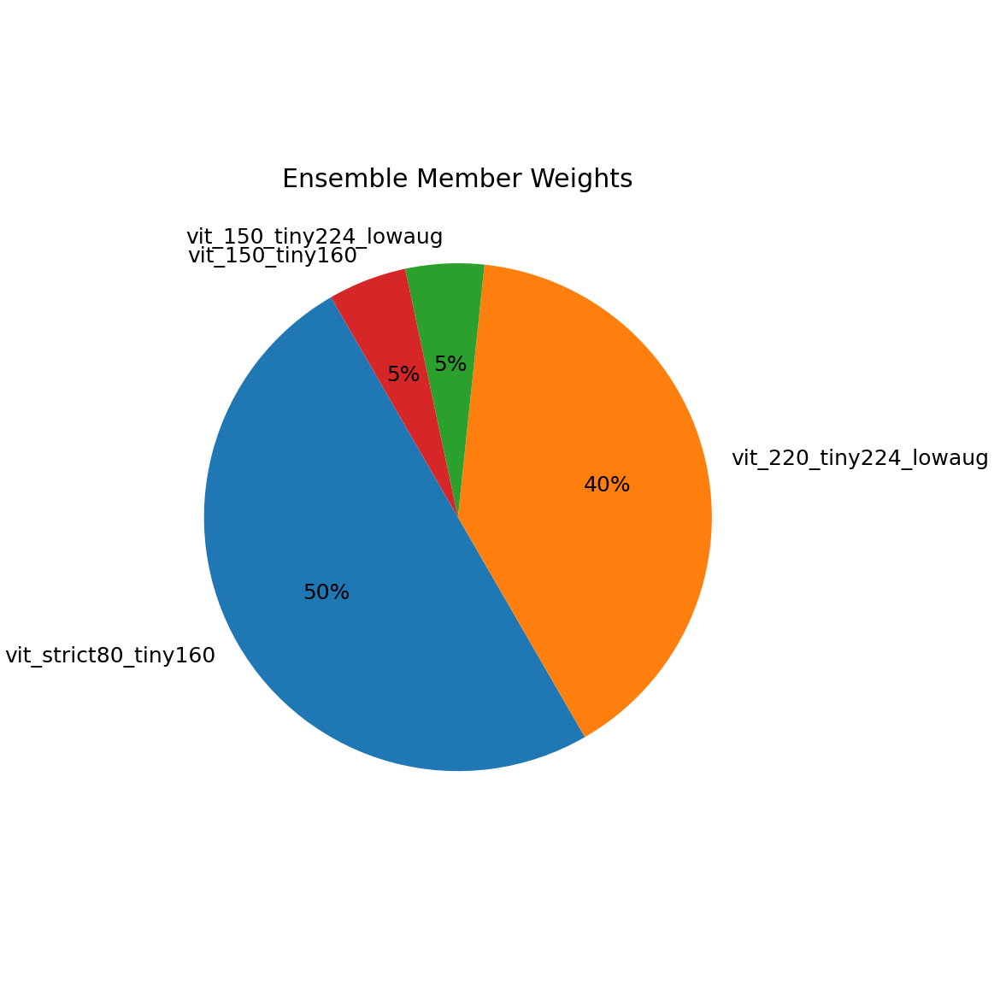
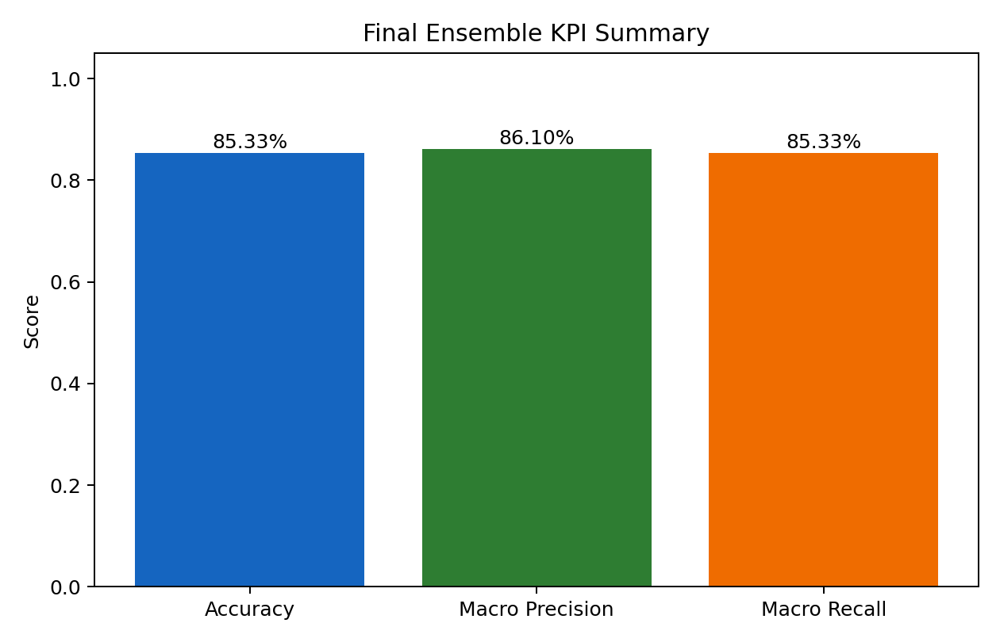
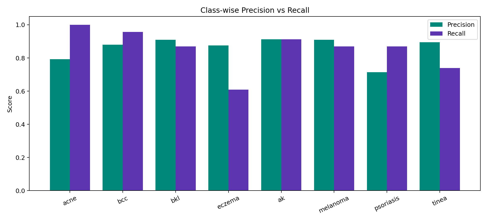
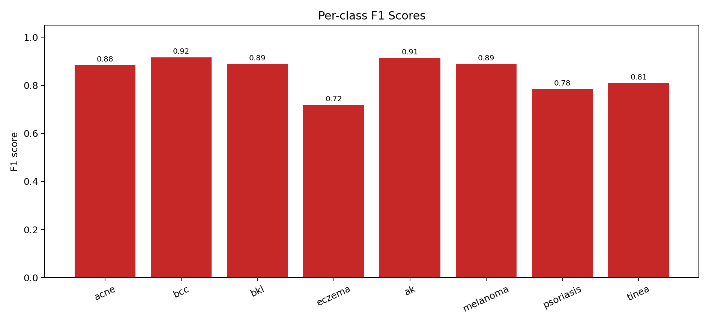
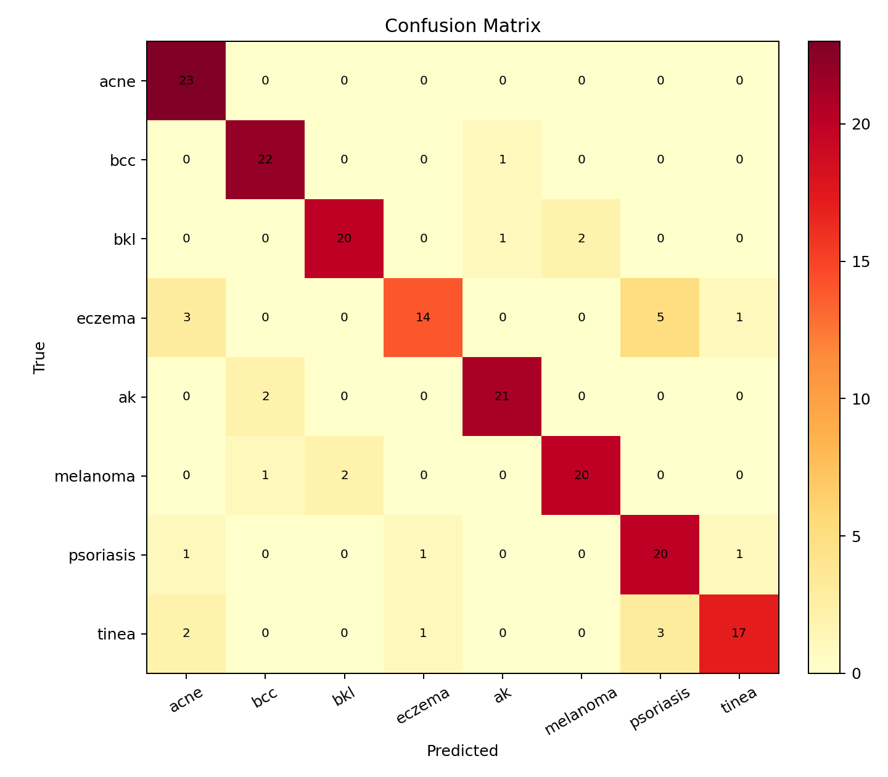

Academic year 2025-2026
This project develops a skin disease image classification system with a Vision Transformer (ViT)-based ensemble. The final deployed ensemble improves performance significantly compared to the single-model baseline and achieves robust class-level behavior across 8 diagnostic classes.
Evaluation set: hf_hybrid_150 test split, 184 images total (23 images per class). Leakage-safe subset score (160 images): 85.00%.
Skin disease diagnosis from images can improve accessibility and preliminary screening support. The objective is to build a practical image classifier that predicts one of eight disease categories from dermoscopic or clinical images.
The project used curated hybrid splits with balanced class support. Multiple training distributions were explored, including strict and expanded variants. The final evaluation is reported on a fixed 8-class test split.
| Item | Configuration |
|---|---|
| Primary evaluation split | datasets/hf_hybrid_150/splits/test |
| Number of classes | 8 |
| Test images per class | 23 |
| Total test samples | 184 |
| Runtime constraint | CPU training and evaluation |
| Model family | Vision Transformer (ViT) |
Since some dataset versions share source images, overlap-aware checks were performed. A leakage-safe subset of the test split (excluding overlap with hf_hybrid_220 train and validation) still showed improved accuracy, supporting generalization of the final ensemble.
| Artifact | Role | Weight |
|---|---|---|
| vit_strict80_tiny160 | High precision anchor | 0.50 |
| vit_220_tiny224_lowaug | Generalization booster | 0.40 |
| vit_150_tiny224_lowaug | Calibration support | 0.05 |
| vit_150_tiny160 | Calibration support | 0.05 |


| Metric | Final Ensemble | Single ViT Baseline | Absolute Gain |
|---|---|---|---|
| Accuracy | 0.8533 | 0.7120 | +0.1413 |
| Macro Precision | 0.8610 | 0.7036 | +0.1574 |
| Macro Recall | 0.8533 | 0.7120 | +0.1413 |
| Leakage-safe Accuracy | 0.8500 | 0.8188 previous blend | +0.0312 |
Baseline values from website/models/metrics.json; final ensemble values from website/models/vit_ensemble_metrics.json.



These patterns are clinically reasonable where visual similarity is high. Future work should target difficult class boundaries with targeted augmentation and class-specific data curation.
| Aspect | Status |
|---|---|
| Inference backend | PyTorch ViT ensemble |
| Number of classes | 8 |
| Model selection policy | Weighted voting by softmax probabilities |
| Runtime target | CPU compatible |
| Artifacts versioning | Saved under artifacts and website/models |
This system is for educational and research use only and does not replace clinical diagnosis by qualified medical professionals.
The project successfully delivered an integrated ViT-based skin disease classifier with a final ensemble score of 85.33% accuracy and 86.10% macro precision on the primary test split. The workflow covers model training, optimization, deployment integration, and reporting with reproducible artifacts.
| Artifact | Purpose |
|---|---|
| website/models/vit_ensemble.json | Final deployed ensemble config |
| website/models/vit_ensemble_metrics.json | Final evaluation metrics |
| website/models/vit_ensemble_confusion.csv | Confusion matrix values |
| docs/report_assets/*.png | Report and presentation visualizations |
End of report.